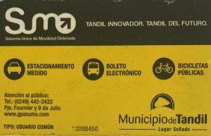

Viajá por Tandil en Transporte Público.
Si Necesitás movilizarte una opción económica es el colectivo. Tenemos varias líneas que abarcan gran parte de la ciudad.
Para saber qué colectivo tomar, cuándo bajar, dónde y cuánto caminar, cuánto tiempo esperar tu línea y cúantas paradas quedan, hay una App que es muy popular.
Si querés saber más de recorridos, boleto electrónico y estacionamiento medido: www.gpssumo.com o teléfono (0249) 442-2433.

La ciudad cuenta con seis líneas de colectivos:
- LINEA 500 (amarillo) "Transporte 9 de Julio". Su cabecera en Catamarca y Vicente López.
- LINEA 501 (rojo) "Transporte Ciudad de Tandil". Cabecera en Salceda y Catriel. Otra en Campus Universidad Nacional del Centro.
- LINEA 502 (blanco) "Transporte la Movediza S:A:". Cabecera en Arrillaga y Jujuy. Otra en el Parque Industrial.
- LINEA 503 (azul) "Transporte Gral. Rodríguez S.A.". Cabecera: Cementerio Municipal y Cementerio Pradera de Paz. Otra en Campus Universidad Nacional del Centro y Alargue Cerro Leones y alargue El Paraíso.
- LINEA 504 (Verde) "Transporte Villa Aguirre S.A.". Cabecera: Bº Metalúrgico: (García y Cardiel) y en Bº 25 de Mayo: (Nigro e Independencia) y alargue Barrio La Unión
- LINEA 505 (Marrón) "Transporte Gral. Belgrano S.R.L.". Con cabecera en La Rural: (Pédersen y Los Ombúes) y en Campus Universidad Nacional del Centro.